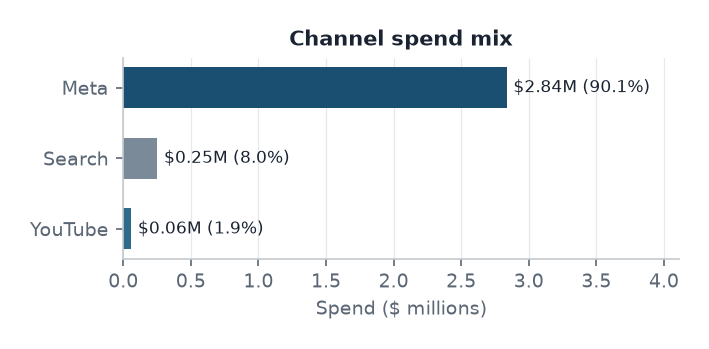
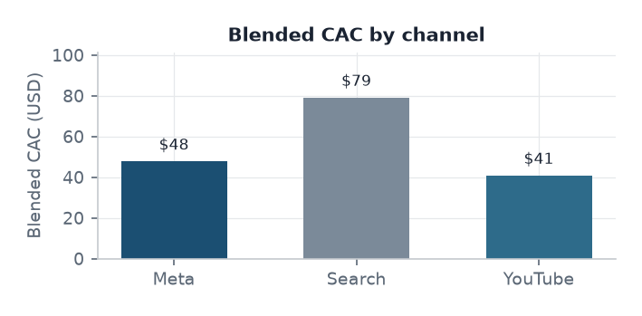
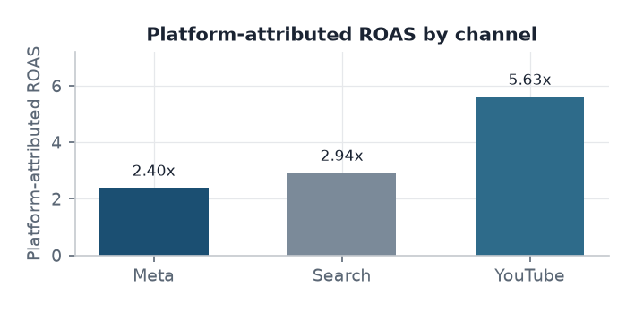
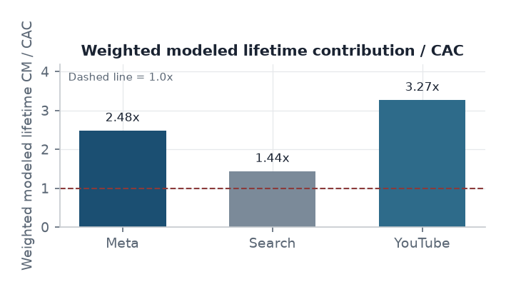
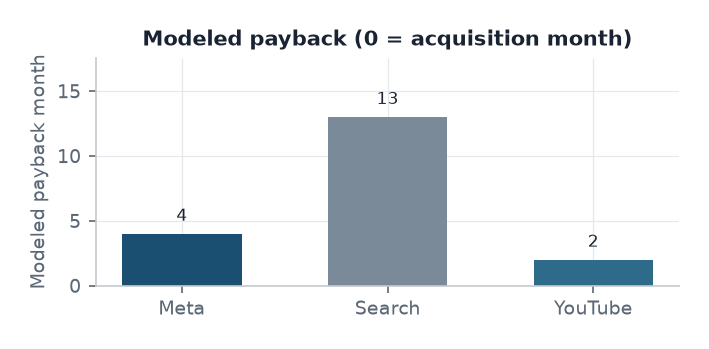

GTM / Marketing Finance case study
Marketing Investment Economics
Evaluating acquisition efficiency, contribution payback, and capital-allocation risk
Efrain Castillo
Self-directed portfolio project using synthetic data
Business question.
How should Finance evaluate where to test incremental marketing investment when channel acquisition
costs, attributed returns, and modeled customer economics differ?
Acquisition efficiency varies materially across channels
Meta Ads
$2,836,272.12 90.1% of spend
- Attributed new cust. proxy
- 59,402
- Blended CAC
- $47.75
- Platform-attributed ROAS
- 2.40x
Google Ads - Search
$251,539.45 8.0% of spend
- Attributed new cust. proxy
- 3,180
- Blended CAC
- $79.10
- Platform-attributed ROAS
- 2.94x
Google Ads - YouTube
$58,598.69 1.9% of spend
- Attributed new cust. proxy
- 1,435
- Blended CAC
- $40.84
- Platform-attributed ROAS
- 5.63x



Source: validated local DuckDB build · synthetic fixtures · platform-attributed ROAS is not incremental return.
Synthetic observed fixture
- Spend, attributed new-customer proxy
- Platform conversions / purchases
- Platform-attributed conversion value
- Blended CAC and platform-attributed ROAS
Modeled assumptions / outputs
- Shared retention curve and $50 ARPU
- Gross margin, refunds, fees, variable cost
- Contribution margin, lifetime contribution, payback
- Weighted lifetime contribution / CAC
Portfolio fixture spend is $3,146,410.26 across 64,017 attributed new customers.
Meta is 90.1% of spend. YouTube has the lowest blended CAC ($40.84);
Search has the highest ($79.10). Platform-attributed ROAS is not profit and is not incremental return.
These metrics identify differences in average acquisition efficiency, not marginal return on the next dollar.
Contribution economics
Contribution economics widen the channel differences
Lifetime figures are forward modeled over 38 months. They are not realized historical cohort performance.
Retention and ARPU are shared assumptions; channel differences in modeled contribution also reflect finance-driver assumptions.
ARPU$50 / month (flat)
Horizon38 months for every cohort
RetentionShared curve · 1.00 to 0.01
Finance driversChannel-specific GM / refund / VC


Source: validated local build · weighted = (customers x modeled CM per customer) / spend · payback month 0 = acquisition month.
| Channel |
Modeled lifetime CM / customer |
Weighted CM / CAC |
Modeled payback month |
Cohorts not paying back |
| YouTube |
$133.41 |
3.267x |
2 |
2 / 36 |
| Meta |
$118.50 |
2.482x |
4 |
4 / 52 |
| Search |
$113.59 |
1.436x |
13 |
12 / 35 |
YouTube's strongest modeled economics combine low blended CAC with slightly better assumed contribution
(higher GM, lower refunds and variable cost). Meta combines the greatest fixture scale with stronger modeled
economics than Search. Search has the thinnest modeled cushion: 1.436x
and payback month 13, with
12 of 35 acquisition cohorts not paying back
within 38 months. Average modeled economics do not establish that additional spend can be placed at the same CAC.
Capital allocation under uncertainty
Average economics identify test priorities, not automatic budget shifts
Downside cases recompute the contribution waterfall. They do not apply cosmetic percentages to the ratio.
There is no marginal-response curve in this fixture, so a “move spend and keep the same return” scenario is not valid.
| Scenario |
Meta (CM/CAC · payback) |
Search (CM/CAC · payback) |
YouTube (CM/CAC · payback) |
| Baseline | 2.48x · m4 | 1.44x · m13 | 3.27x · m2 |
|---|
| CAC +20% | 2.07x · m6 | 1.20x · m20 | 2.72x · m3 |
|---|
| ARPU -20% | 1.83x · m8 | 1.05x · m29 | 2.45x · m4 |
|---|
| Retention downside | 2.07x · m5 | 1.20x · m19 | 2.73x · m3 |
|---|
| Gross margin -5 pp | 2.20x · m5 | 1.27x · m17 | 2.93x · m3 |
|---|
Search is the most fragile: under ARPU -20% weighted CM/CAC falls to 1.05x
(payback month 29).
CAC +20% leaves Search at 1.20x.
YouTube remains above 2.45x even with ARPU -20%, but is only 1.9% of fixture spend.
Meta stays above 1.83x in that case while already representing 90.1% of spend.
What Finance can say now
- Search has the least downside cushion in the modeled economics.
- YouTube warrants incremental testing because baseline modeled economics are strongest — not because scale is proven.
- Meta warrants continued scrutiny because it is already 90.1% of fixture spend.
- Assumption sensitivity materially changes investment attractiveness, especially for Search.
What Finance needs before scaling
- Marginal CAC and spend capacity / saturation
- Incremental contribution, not only platform-attributed ROAS
- Attribution overlap and cannibalization
- Realized retention, ARPU, and customer quality by channel
Management actions
- Set channel investment guardrails using contribution-margin payback and downside cases, not ROAS alone.
- Prioritize incremental testing where average modeled economics are strongest, while explicitly testing marginal CAC and capacity.
- Investigate Search cohorts that do not pay back within the 38-month modeled horizon before adding spend.
- Replace shared ARPU/retention assumptions with observed channel and customer-quality data when enough history exists.
Limitations. Synthetic ad fixtures; sparse sampled dates, not a continuous daily panel; platform attribution is not causal incrementality;
ARPU and retention are modeled; 38-month forward horizon; Google campaign taxonomy is fixture-limited; no marginal-response or saturation data.